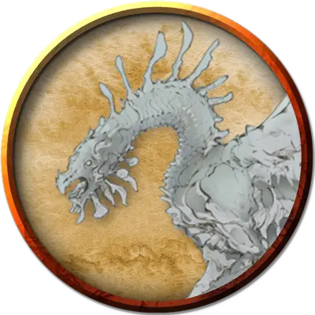

Молодой лунный дракон
Young Lunar Dragon
Большой Дракон, обычно нейтрально-злой

Класс Доспеха 16 (природный доспех)
Хиты 123 (13к10 + 52)
Скорость 40 футов, летая 80 футов, копая 20 футов
| мод | спас | ||
|---|---|---|---|
| СИЛ | 19 | +4 | +4 |
| ЛОВ | 12 | +1 | +1 |
| ТЕЛ | 18 | +4 | +7 |
| мод | спас | ||
|---|---|---|---|
| ИНТ | 8 | −1 | −1 |
| МДР | 10 | +0 | +3 |
| ХАР | 13 | +1 | +1 |
Навыки Восприятие +6, Скрытность +7
Иммунитет к урону холод
Чувства тёмное зрение 240 футов, пассивное Восприятие 16
Языки Драконий
Опасность 7 (2900 опыта)
Бонус мастерства +3
Особенности
Прокладывание туннеля. Дракон может копать сквозь сплошной камень со скоростью копания, уменьшенной вдвое, оставляя за собой туннель диаметром 10 фт.
Необычная природа. Дракону не нужен воздух.
Действия
Мультиатака. Дракон совершает одну атаку Укусом и две Когтями.
Укус. . Рукопашная атака оружием: +7 к попаданию, досягаемость 10 фт., одна цель. Попадание: 7 (1к6+4) колющего урона плюс 3 (1к6) урона холодом.
Коготь. . Рукопашная атака оружием: +7 к попаданию, досягаемость 5 фт., одна цель. Попадание: 7 (1к6+4) рубящего урона.
Холодное дыхание (перезарядка 5–6). Дракон выдыхает волну ледяного воздуха 30-футовым конусом. Каждое существо в области конуса области должно совершить спасбросок Телосложения Сл 15. При провале существо получает 27 (6к8) урона холодом и его скорость уменьшается до 0, до конца его следующего хода. В случае успеха существо получает половину этого урона и его скорость не уменьшается.
Бонусные действия
Фазовое состояние (2/день). Дракон становится частично бестелесным до тех пор, пока он сохраняет концентрацию на эффекте (как если бы он концентрировался на заклинании). Будучи частично бестелесным, дракон обладает сопротивлением дробящему, колющему и рубящему урону.
Описание
Лунные драконы (также известные как драконы луны или фазовые драконы) - капризные, ксенофобные существа, которые устраивают свои логова внутри пустынных лун, прорывая норы в скалах.
Прежде чем отложить яйца, самка лунного дракона запасается пищей в своем логове; она не покинет логово снова, пока яйца не вылупятся и потомство не станет достаточно взрослым, чтобы заботиться о себе. Яйца лунного дракона имеют каменную скорлупу от бледно-белого до светло-серого цвета. Лунные драконы алебастрово-белые, когда вылупляются, и постепенно темнеют с возрастом. Древние лунные драконы обладают сланцевым цветом.
Лунным драконам больше нравится лишать других существ сокровищ, чем самим приобретать их. Часто среди сокровищ в сокровищнице лунного дракона можно найти один или несколько штурвалов чарохода [spelljamming helm], снятых с кораблей, которые осмелились вторгнуться на территорию дракона.
Лунный дракон может стать бестелесным, но не до такой степени, чтобы он мог проходить сквозь других существ или твердые объекты. В этом полубестелесном состоянии примерно половина тела дракона имеет темную, размытую призрачную форму